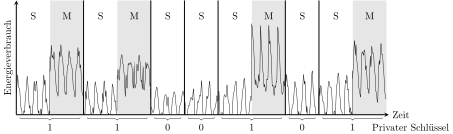
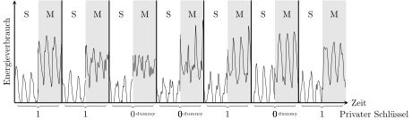

Simple Power Analysis (SPA) umfasst die Analyse von Stromkurven (Power Traces) oder Diagrammen, die die elektrische Aktivität kryptografischer Geräte abbilden (z.B. Smartcards, integrierte Schaltkreise, CPUs, etc.). Mithilfe dieser Information wird versucht, Geheimnisse aus den Geräten zu extrahieren.
Ein gutes Beispiel für die Anfälligkeit eines Algorithmus gegen einen SPA-basierten Angriff, ist der Square-And-Multiply-Algorithmus, der bei RSA zum Einsatz kommt.
c - Typ: Ganzzahl Basis für die Potenzrechnung
power - Typ: Ganzzahl Potenz
n - Typ: Ganzzahl Divisor the Modulo-Operation
Operators:
>> - Bitshift nach rechts
& - logisches Und
% - Modulo
def unsafe_square_and_multiply(c, power, n):
res = 1
while power > 0: # Wir iterieren über die Bits durch verkleinern von 'power'
res = (res * res) % n # 'square'-Schritt
b = power & 1 # Ermittlung des Bits in der jeweiligen Runde, indem mit 1 ein 'logisches und' gerechnet wird.
if b == 1:
res = (res * c) % n # Falls das Bit eine 1 ist, muss multipliziert werden ('multiply'-Schritt)
power = power >> 1 # Durch ein Bitshift nach rechts rückt das nächste Bit für die nächste Runde an die niedrigste Stelle.
return res
Der Algorithmus funktioniert folgendermaßen: es wird eine Schleife über die binäre Representation des Exponenten (Variable power) gerechnet. Dabei gehen wir hier vom niedrigsten zum höchsten Bit vor. Die Binärrepresentation lässt sich auf verschiedene Weisen berechnen, in diesem Fall werden Bit-Operationen verwendet. Das niedrigste Bit wird durch ein logisches und mit der Zahl 1 ermittelt. Für jedes Bit des Exponenten, wird eine Platzhalter-Variable res quadriert. Falls sich an der aktuellen Stelle des Exponenten eine 1 befindet, wird die Basis c hineinmultipliziert. Das nächste Bit rückt durch einen Bitshift nach rechts nach - diese Operation verwirft das niedrigste Bit und rückt die Restlichen nach. Ist die Zahl 0, sind keine Bits mehr im Exponenten und die Berechnung ist fertig. res wird als Ergebnis zurückgegeben.
Der Algorithmus basiert darauf, das Potenzen von Potenzen multipliziert werden, so ist z.B. \(2^{2^{2^2}}\) das gleiche wie \(2^8\), da \(2 \cdot 2 \cdot 2\) ergibt \(8\). Da binäre Potenzen sehr schnell wachsen (\(2^{30}\) ist bereits größer als eine Milliarde), lassen sich damit innerhalb weniger 100 Runden, RSA Ver- und Entschlüsselungsoperationen durchführen.
Beachte: es gibt neben dieser noch viele andere Varianten des "Square and Multiply"-Algorithmus. Diese ist in Python geschrieben und kann auch kopiert und ausgeführt werden.
Im Plug-in selbst können die Parameter einer RSA-Entschlüsselung ausgewählt werden, das als Beispiel dient.

Chiffretext \(c\): Zeigt den, mit dem geheimen privaten Schlüssel \(d\) (z. B. \(101\)) verschlüsselten Geheimtext (z. B. \(5454\)).
\(P\) und \(Q\) sind zwei teilerfremde Zahlen. Der Modulus \(n\) ist \(P \cdot Q\).
\(R = c^d \; \text{mod} \; n\) ist der entschlüsselte Klartext, das Ergebnis des "Square and Multiply" Algorithmus.

Im Plug-in sehen wir die einzelnen Schritte einer Berechnung.
Der "Square and Multiply"-Algorithmus ist anfällig für "Power Analysis Attack", da die optionale Operation "Multiply" eine eindeutig unterschiedliche Spur in Stromkurven verursacht.
Die Stromkurve (Power Trace) ist zwischen den Operationen "Square and Multiply (SM)" und "Square (S)" unterschiedlich. Dadurch kann die "Simple Power Analysis" jedes Bit des geheimen Exponenten \(d\) durch den Vergleich und die Analyse der Stromkurve feststellen. In der Abbildung oben wird die Stromkurve des privaten Schlüssel 1100101 gezeigt.
Der "Square and Multiply"-Algorithmus kann durch hinzufügen einer einfachen Dummy-Multiplikation erheblich verbessert werden. Wenn das aktuelle Bit gleich "0" ist, kann eine nicht relevante Berechnung durchgeführt werden, die in etwa denselben Aufwand wie ein Multiply-Schritt verursacht, aber für das Endergebnis nicht relevant ist.
c - Typ: Ganzzahl Basis für die Potenzrechnung
power - Typ: Ganzzahl Potenz
n - Typ: Ganzzahl Divisor the Modulo-Operation
Operators:
>> - Bitshift nach rechts
& - logisches Und
% - Modulo
def square_and_multiply(c, power, n):
res = 1
while power > 0: # Wir iterieren über die Bits durch verkleinern von 'power'
res = (res * res) % n # 'square'-Schritt
b = power & 1 # Ermittlung des Bits in der jeweiligen Runde, indem mit 1 ein 'logisches und' gerechnet wird.
if b == 1:
res = (res * c) % n # Falls das Bit eine 1 ist, muss multipliziert werden ('multiply'-Schritt)
else:
tmp = (res * c) % n # Dummy-Multiplikation deren Ergebnis verworfen wird
power = power >> 1 # Durch ein Bitshift nach rechts rückt das nächste Bit für die nächste Runde an die niedrigste Stelle.
return res

Egal, ob das gegenwärtige Bit gleich "1" oder "0" ist, es wird immer quadriert und multipliziert.
Offensichtlich gibt es keine Unterschiede mehr, ob eine "0" oder eine "1" verarbeitet wurde. Es kann nicht mehr herausgefunden werden, ob der private Schlüssel d eine "0" oder "1" an einer Stelle enthält.
Für weitere Informationen über elliptischen Kurve Berechnung, siehe Unterabschnitt "Simple Power Analysis" in "Power-Analyse" oder http://en.wikipedia.org/wiki/Power_analysis#Simple_Power_Analysis.